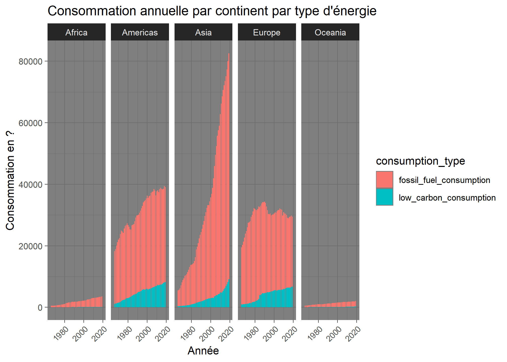
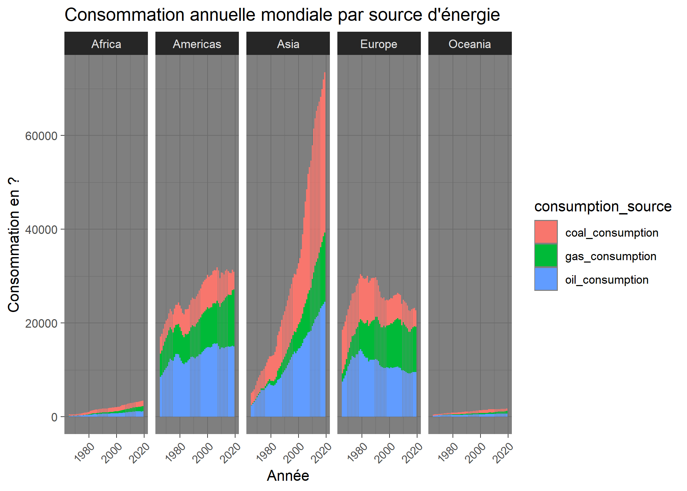
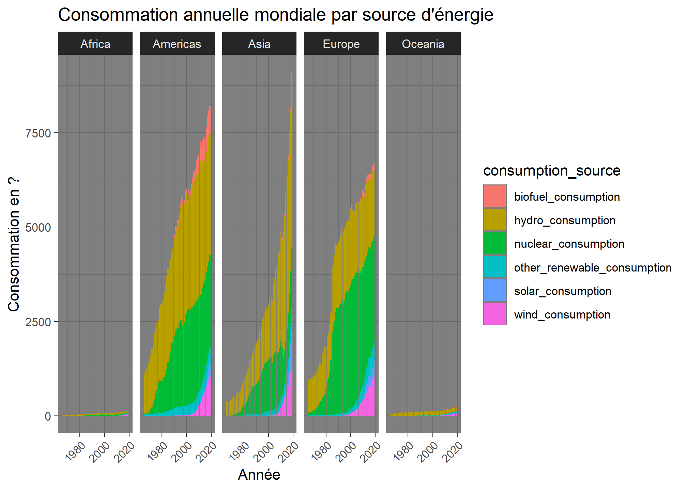
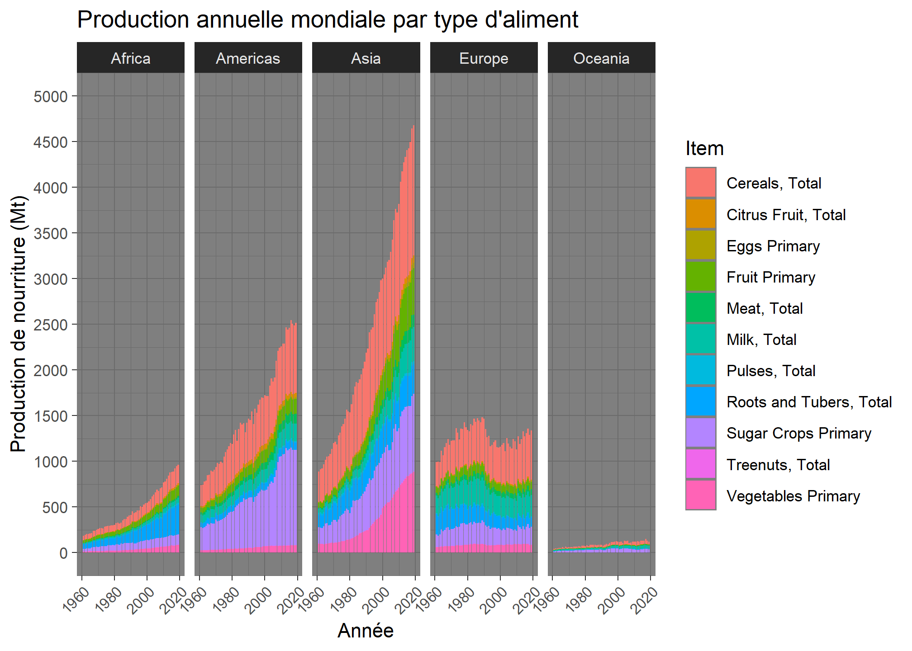
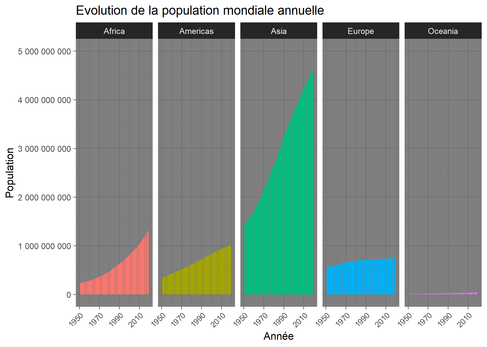

Analyse par continent
Cette page présente l’analyse par continent au fur et à mesure des années.
Consommation d’énergie annuelle par continent et type d’énergie

Consommation d’énergie annuelle par continent et source d’énergie (énergie fossile)

Consommation d’énergie annuelle par continent et source d’énergie (énergie à faible émission de CO2)

Production annuelle de nourriture par continent

Evolution de la population annuelle par continent
